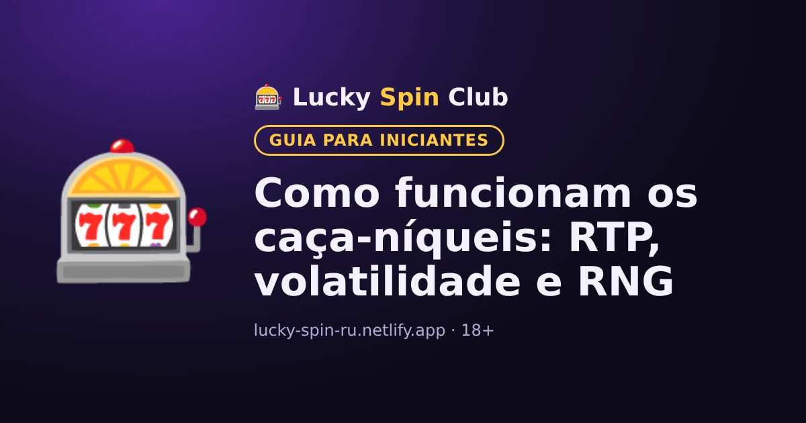

Como funcionam os caça-níqueis: RTP, volatilidade e RNG

Atualizado: 6 de novembro de 2026
Os caça-níqueis são os jogos mais populares do cassino. Veja como funcionam para jogar com consciência.
Gerador de números aleatórios (RNG)
Cada giro é decidido por um gerador de números aleatórios. Cada giro é independente dos anteriores: a máquina não “lembra” das perdas e não “deve” um prêmio. Não existem esquemas vencedores para caça-níqueis.
RTP: retorno ao jogador
O RTP mostra que parte de todas as apostas a máquina devolve aos jogadores em um período muito longo. Por exemplo, um RTP de 96% significa que, em média, de cada R$100 apostados, R$96 voltam como prêmios e R$4 são a vantagem do cassino. No curto prazo o resultado pode variar muito para qualquer lado.
Volatilidade
- Baixa: prêmios frequentes, mas pequenos.
- Média: equilíbrio entre frequência e tamanho.
- Alta: prêmios raros, mas que podem ser grandes. O saldo pode cair por muito tempo.
Recursos de bônus
Muitos caça-níqueis têm giros grátis, multiplicadores e rodadas de bônus. Eles sempre estão descritos na seção “Regras” ou “Tabela de pagamentos” do jogo; confira antes de começar.
Dica
Experimente o modo demo, se houver: assim você conhece o jogo sem arriscar dinheiro.
📊 Quantos giros seu dinheiro aguenta? Veja na calculadora de banca.
Calculadora de bancaQuer experimentar? O cadastro leva cerca de um minuto.
🎁 Cadastrar e pegar o bônusPerguntas frequentes
Dá para prever um prêmio no caça-níquel?
Não. Cada giro é decidido por um gerador de números aleatórios e não depende dos anteriores.
O que significa RTP de 96%?
Em um período muito longo, a máquina devolve em média 96% de todas as apostas. No curto prazo o resultado pode variar bastante.
Quais caça-níqueis são bons para iniciantes?
Para iniciantes costumam ser mais fáceis os de volatilidade baixa ou média: os prêmios vêm com mais frequência, embora menores. Dá para testar o modo demo antes de jogar com dinheiro.